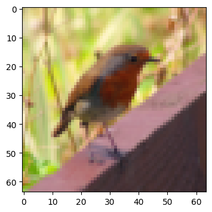
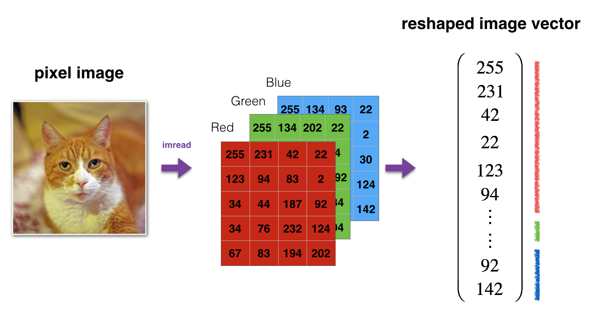
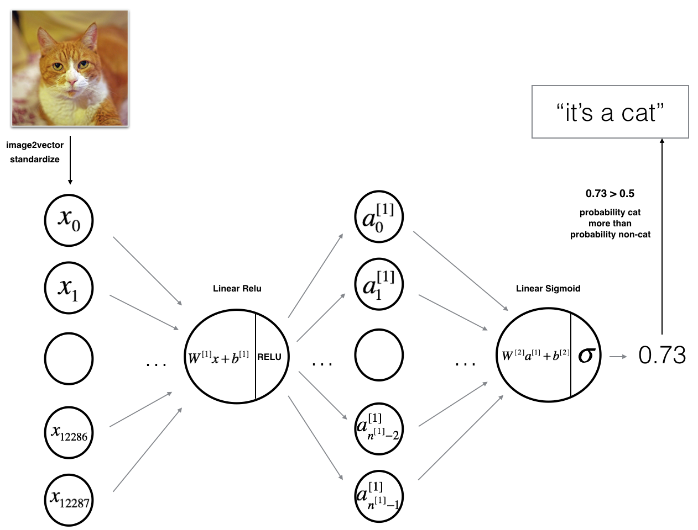
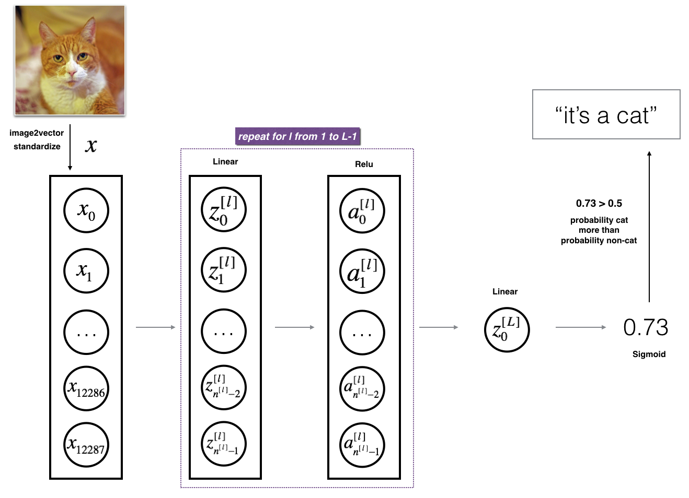
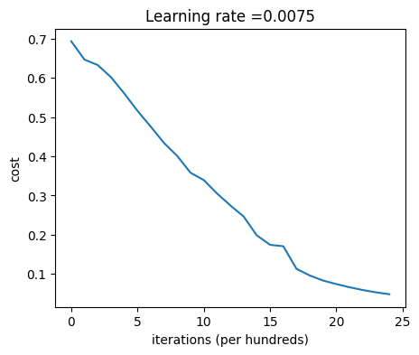
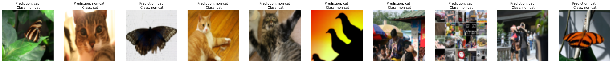
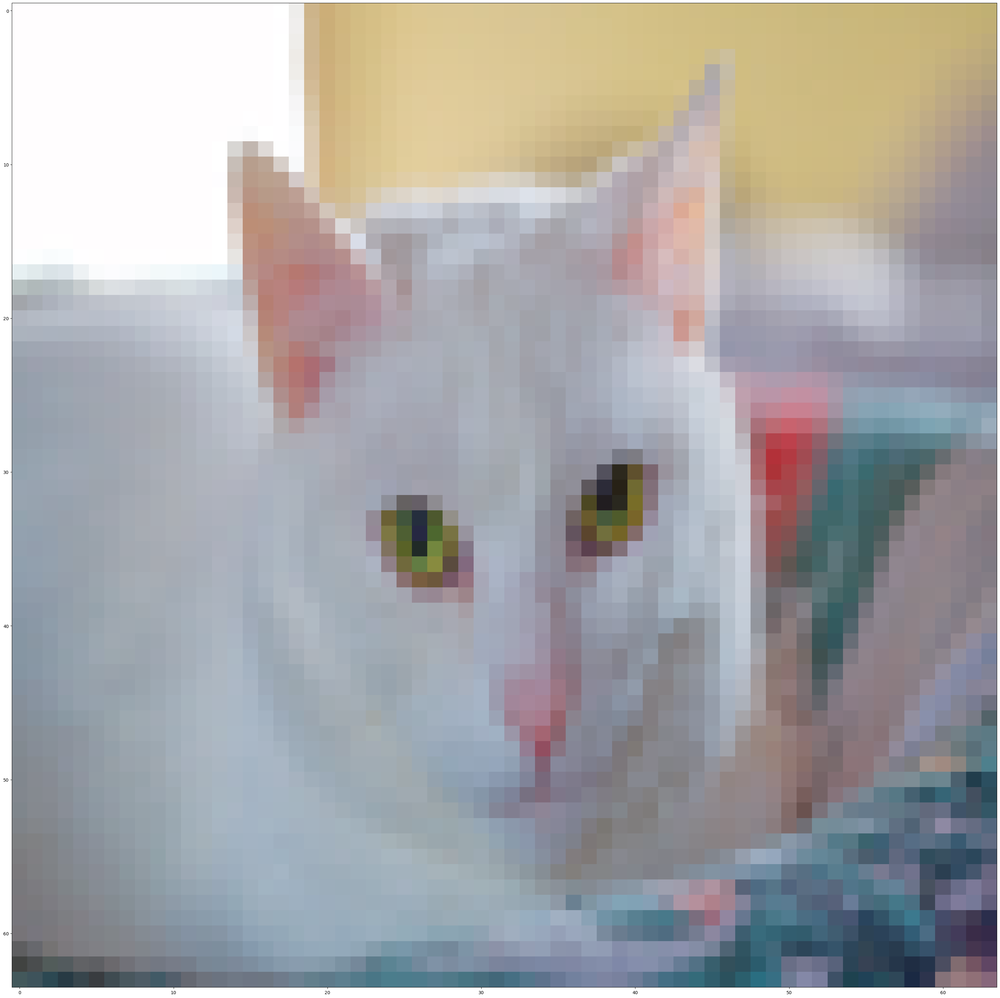

Deep Neural Network for Image Classification: Application#
By the time you complete this notebook, you will have finished the last programming assignment of Week 4, and also the last programming assignment of Course 1! Go you!
To build your cat/not-a-cat classifier, you’ll use the functions from the previous assignment to build a deep network. Hopefully, you’ll see an improvement in accuracy over your previous logistic regression implementation.
After this assignment you will be able to:
Build and train a deep L-layer neural network, and apply it to supervised learning
Let’s get started!
Important Note on Submission to the AutoGrader#
Before submitting your assignment to the AutoGrader, please make sure you are not doing the following:
You have not added any extra
printstatement(s) in the assignment.You have not added any extra code cell(s) in the assignment.
You have not changed any of the function parameters.
You are not using any global variables inside your graded exercises. Unless specifically instructed to do so, please refrain from it and use the local variables instead.
You are not changing the assignment code where it is not required, like creating extra variables.
If you do any of the following, you will get something like, Grader Error: Grader feedback not found (or similarly unexpected) error upon submitting your assignment. Before asking for help/debugging the errors in your assignment, check for these first. If this is the case, and you don’t remember the changes you have made, you can get a fresh copy of the assignment by following these instructions.
1 - Packages#
Begin by importing all the packages you’ll need during this assignment.
numpy is the fundamental package for scientific computing with Python.
matplotlib is a library to plot graphs in Python.
h5py is a common package to interact with a dataset that is stored on an H5 file.
PIL and scipy are used here to test your model with your own picture at the end.
dnn_app_utilsprovides the functions implemented in the “Building your Deep Neural Network: Step by Step” assignment to this notebook.np.random.seed(1)is used to keep all the random function calls consistent. It helps grade your work - so please don’t change it!
### v1.2
import time
import numpy as np
import h5py
import matplotlib.pyplot as plt
import scipy
from PIL import Image
from scipy import ndimage
from dnn_app_utils_v3 import *
from public_tests import *
%matplotlib inline
plt.rcParams['figure.figsize'] = (5.0, 4.0) # set default size of plots
plt.rcParams['image.interpolation'] = 'nearest'
plt.rcParams['image.cmap'] = 'gray'
%load_ext autoreload
%autoreload 2
np.random.seed(1)
2 - Load and Process the Dataset#
You’ll be using the same “Cat vs non-Cat” dataset as in “Logistic Regression as a Neural Network” (Assignment 2). The model you built back then had 70% test accuracy on classifying cat vs non-cat images. Hopefully, your new model will perform even better!
Problem Statement: You are given a dataset (“data.h5”) containing:
- a training set of m_train images labelled as cat (1) or non-cat (0)
- a test set of m_test images labelled as cat and non-cat
- each image is of shape (num_px, num_px, 3) where 3 is for the 3 channels (RGB).
Let’s get more familiar with the dataset. Load the data by running the cell below.
train_x_orig, train_y, test_x_orig, test_y, classes = load_data()
The following code will show you an image in the dataset. Feel free to change the index and re-run the cell multiple times to check out other images.
# Example of a picture
index = 10
plt.imshow(train_x_orig[index])
print ("y = " + str(train_y[0,index]) + ". It's a " + classes[train_y[0,index]].decode("utf-8") + " picture.")
y = 0. It's a non-cat picture.

# Explore your dataset
m_train = train_x_orig.shape[0]
num_px = train_x_orig.shape[1]
m_test = test_x_orig.shape[0]
print ("Number of training examples: " + str(m_train))
print ("Number of testing examples: " + str(m_test))
print ("Each image is of size: (" + str(num_px) + ", " + str(num_px) + ", 3)")
print ("train_x_orig shape: " + str(train_x_orig.shape))
print ("train_y shape: " + str(train_y.shape))
print ("test_x_orig shape: " + str(test_x_orig.shape))
print ("test_y shape: " + str(test_y.shape))
Number of training examples: 209
Number of testing examples: 50
Each image is of size: (64, 64, 3)
train_x_orig shape: (209, 64, 64, 3)
train_y shape: (1, 209)
test_x_orig shape: (50, 64, 64, 3)
test_y shape: (1, 50)
As usual, you reshape and standardize the images before feeding them to the network. The code is given in the cell below.

# Reshape the training and test examples
train_x_flatten = train_x_orig.reshape(train_x_orig.shape[0], -1).T # The "-1" makes reshape flatten the remaining dimensions
test_x_flatten = test_x_orig.reshape(test_x_orig.shape[0], -1).T
# Standardize data to have feature values between 0 and 1.
train_x = train_x_flatten/255.
test_x = test_x_flatten/255.
print ("train_x's shape: " + str(train_x.shape))
print ("test_x's shape: " + str(test_x.shape))
train_x's shape: (12288, 209)
test_x's shape: (12288, 50)
Note: \(12,288\) equals \(64 \times 64 \times 3\), which is the size of one reshaped image vector.
3 - Model Architecture#
3.1 - 2-layer Neural Network#
Now that you’re familiar with the dataset, it’s time to build a deep neural network to distinguish cat images from non-cat images!
You’re going to build two different models:
A 2-layer neural network
An L-layer deep neural network
Then, you’ll compare the performance of these models, and try out some different values for \(L\).
Let’s look at the two architectures:

The model can be summarized as: INPUT -> LINEAR -> RELU -> LINEAR -> SIGMOID -> OUTPUT.
Detailed Architecture of Figure 2:
The input is a (64,64,3) image which is flattened to a vector of size \((12288,1)\).
The corresponding vector: \([x_0,x_1,...,x_{12287}]^T\) is then multiplied by the weight matrix \(W^{[1]}\) of size \((n^{[1]}, 12288)\).
Then, add a bias term and take its relu to get the following vector: \([a_0^{[1]}, a_1^{[1]},..., a_{n^{[1]}-1}^{[1]}]^T\).
Multiply the resulting vector by \(W^{[2]}\) and add the intercept (bias).
Finally, take the sigmoid of the result. If it’s greater than 0.5, classify it as a cat.
3.2 - L-layer Deep Neural Network#
It’s pretty difficult to represent an L-layer deep neural network using the above representation. However, here is a simplified network representation:

The model can be summarized as: [LINEAR -> RELU] $\times$ (L-1) -> LINEAR -> SIGMOID
Detailed Architecture of Figure 3:
The input is a (64,64,3) image which is flattened to a vector of size (12288,1).
The corresponding vector: \([x_0,x_1,...,x_{12287}]^T\) is then multiplied by the weight matrix \(W^{[1]}\) and then you add the intercept \(b^{[1]}\). The result is called the linear unit.
Next, take the relu of the linear unit. This process could be repeated several times for each \((W^{[l]}, b^{[l]})\) depending on the model architecture.
Finally, take the sigmoid of the final linear unit. If it is greater than 0.5, classify it as a cat.
3.3 - General Methodology#
As usual, you’ll follow the Deep Learning methodology to build the model:
Initialize parameters / Define hyperparameters
Loop for num_iterations: a. Forward propagation b. Compute cost function c. Backward propagation d. Update parameters (using parameters, and grads from backprop)
Use trained parameters to predict labels
Now go ahead and implement those two models!
4 - Two-layer Neural Network#
Exercise 1 - two_layer_model#
Use the helper functions you have implemented in the previous assignment to build a 2-layer neural network with the following structure: LINEAR -> RELU -> LINEAR -> SIGMOID. The functions and their inputs are:
def initialize_parameters(n_x, n_h, n_y):
...
return parameters
def linear_activation_forward(A_prev, W, b, activation):
...
return A, cache
def compute_cost(AL, Y):
...
return cost
def linear_activation_backward(dA, cache, activation):
...
return dA_prev, dW, db
def update_parameters(parameters, grads, learning_rate):
...
return parameters
### CONSTANTS DEFINING THE MODEL ####
n_x = 12288 # num_px * num_px * 3
n_h = 7
n_y = 1
layers_dims = (n_x, n_h, n_y)
learning_rate = 0.0075
# GRADED FUNCTION: two_layer_model
def two_layer_model(X, Y, layers_dims, learning_rate = 0.0075, num_iterations = 3000, print_cost=False):
"""
Implements a two-layer neural network: LINEAR->RELU->LINEAR->SIGMOID.
Arguments:
X -- input data, of shape (n_x, number of examples)
Y -- true "label" vector (containing 1 if cat, 0 if non-cat), of shape (1, number of examples)
layers_dims -- dimensions of the layers (n_x, n_h, n_y)
num_iterations -- number of iterations of the optimization loop
learning_rate -- learning rate of the gradient descent update rule
print_cost -- If set to True, this will print the cost every 100 iterations
Returns:
parameters -- a dictionary containing W1, W2, b1, and b2
"""
np.random.seed(1)
grads = {}
costs = [] # to keep track of the cost
m = X.shape[1] # number of examples
(n_x, n_h, n_y) = layers_dims
# Initialize parameters dictionary, by calling one of the functions you'd previously implemented
#(≈ 1 line of code)
# parameters = ...
# YOUR CODE STARTS HERE
parameters = initialize_parameters(n_x, n_h, n_y)
# YOUR CODE ENDS HERE
# Get W1, b1, W2 and b2 from the dictionary parameters.
W1 = parameters["W1"]
b1 = parameters["b1"]
W2 = parameters["W2"]
b2 = parameters["b2"]
# Loop (gradient descent)
for i in range(0, num_iterations):
# Forward propagation: LINEAR -> RELU -> LINEAR -> SIGMOID. Inputs: "X, W1, b1, W2, b2". Output: "A1, cache1, A2, cache2".
#(≈ 2 lines of code)
# A1, cache1 = ...
# A2, cache2 = ...
# YOUR CODE STARTS HERE
A1, cache1 = linear_activation_forward(X, W1, b1, "relu")
A2, cache2 = linear_activation_forward(A1, W2, b2, "sigmoid")
# YOUR CODE ENDS HERE
# Compute cost
#(≈ 1 line of code)
# cost = ...
# YOUR CODE STARTS HERE
cost = compute_cost(A2, Y)
# YOUR CODE ENDS HERE
# Initializing backward propagation
dA2 = - (np.divide(Y, A2) - np.divide(1 - Y, 1 - A2))
# Backward propagation. Inputs: "dA2, cache2, cache1". Outputs: "dA1, dW2, db2; also dA0 (not used), dW1, db1".
#(≈ 2 lines of code)
# dA1, dW2, db2 = ...
# dA0, dW1, db1 = ...
# YOUR CODE STARTS HERE
dA1, dW2, db2 = linear_activation_backward(dA2, cache2, "sigmoid")
dA0, dW1, db1 = linear_activation_backward(dA1, cache1, "relu")
# YOUR CODE ENDS HERE
# Set grads['dWl'] to dW1, grads['db1'] to db1, grads['dW2'] to dW2, grads['db2'] to db2
grads['dW1'] = dW1
grads['db1'] = db1
grads['dW2'] = dW2
grads['db2'] = db2
# Update parameters.
#(approx. 1 line of code)
# parameters = ...
# YOUR CODE STARTS HERE
parameters = update_parameters(parameters, grads, learning_rate)
# YOUR CODE ENDS HERE
# Retrieve W1, b1, W2, b2 from parameters
W1 = parameters["W1"]
b1 = parameters["b1"]
W2 = parameters["W2"]
b2 = parameters["b2"]
# Print the cost every 100 iterations and for the last iteration
if print_cost and (i % 100 == 0 or i == num_iterations - 1):
print("Cost after iteration {}: {}".format(i, np.squeeze(cost)))
if i % 100 == 0:
costs.append(cost)
return parameters, costs
def plot_costs(costs, learning_rate=0.0075):
plt.plot(np.squeeze(costs))
plt.ylabel('cost')
plt.xlabel('iterations (per hundreds)')
plt.title("Learning rate =" + str(learning_rate))
plt.show()
parameters, costs = two_layer_model(train_x, train_y, layers_dims = (n_x, n_h, n_y), num_iterations = 2, print_cost=False)
print("Cost after first iteration: " + str(costs[0]))
two_layer_model_test(two_layer_model)
Cost after first iteration: 0.693049735659989
All tests passed.
Expected output:
cost after iteration 1 must be around 0.69
4.1 - Train the model#
If your code passed the previous cell, run the cell below to train your parameters.
The cost should decrease on every iteration.
It may take up to 5 minutes to run 2500 iterations.
parameters, costs = two_layer_model(train_x, train_y, layers_dims = (n_x, n_h, n_y), num_iterations = 2500, print_cost=True)
plot_costs(costs, learning_rate)
Cost after iteration 0: 0.693049735659989
Cost after iteration 100: 0.6464320953428849
Cost after iteration 200: 0.6325140647912677
Cost after iteration 300: 0.6015024920354665
Cost after iteration 400: 0.5601966311605747
Cost after iteration 500: 0.5158304772764729
Cost after iteration 600: 0.4754901313943325
Cost after iteration 700: 0.4339163151225749
Cost after iteration 800: 0.4007977536203889
Cost after iteration 900: 0.3580705011323798
Cost after iteration 1000: 0.3394281538366412
Cost after iteration 1100: 0.3052753636196265
Cost after iteration 1200: 0.27491377282130164
Cost after iteration 1300: 0.24681768210614832
Cost after iteration 1400: 0.19850735037466102
Cost after iteration 1500: 0.1744831811255665
Cost after iteration 1600: 0.1708076297809593
Cost after iteration 1700: 0.11306524562164734
Cost after iteration 1800: 0.09629426845937145
Cost after iteration 1900: 0.08342617959726863
Cost after iteration 2000: 0.07439078704319081
Cost after iteration 2100: 0.06630748132267927
Cost after iteration 2200: 0.05919329501038168
Cost after iteration 2300: 0.05336140348560552
Cost after iteration 2400: 0.04855478562877017
Cost after iteration 2499: 0.04421498215868951

Expected Output:
| Cost after iteration 0 | 0.6930497356599888 |
| Cost after iteration 100 | 0.6464320953428849 |
| ... | ... |
| Cost after iteration 2499 | 0.04421498215868956 |
Nice! You successfully trained the model. Good thing you built a vectorized implementation! Otherwise it might have taken 10 times longer to train this.
Now, you can use the trained parameters to classify images from the dataset. To see your predictions on the training and test sets, run the cell below.
predictions_train = predict(train_x, train_y, parameters)
Accuracy: 0.9999999999999998
Expected Output:
| Accuracy | 0.9999999999999998 |
predictions_test = predict(test_x, test_y, parameters)
Accuracy: 0.72
Expected Output:
| Accuracy | 0.72 |
Congratulations! It seems that your 2-layer neural network has better performance (72%) than the logistic regression implementation (70%, assignment week 2). Let’s see if you can do even better with an \(L\)-layer model.#
Note: You may notice that running the model on fewer iterations (say 1500) gives better accuracy on the test set. This is called “early stopping” and you’ll hear more about it in the next course. Early stopping is a way to prevent overfitting.
5 - L-layer Neural Network#
Exercise 2 - L_layer_model#
Use the helper functions you implemented previously to build an \(L\)-layer neural network with the following structure: [LINEAR -> RELU]\(\times\)(L-1) -> LINEAR -> SIGMOID. The functions and their inputs are:
def initialize_parameters_deep(layers_dims):
...
return parameters
def L_model_forward(X, parameters):
...
return AL, caches
def compute_cost(AL, Y):
...
return cost
def L_model_backward(AL, Y, caches):
...
return grads
def update_parameters(parameters, grads, learning_rate):
...
return parameters
### CONSTANTS ###
layers_dims = [12288, 20, 7, 5, 1] # 4-layer model
# GRADED FUNCTION: L_layer_model
def L_layer_model(X, Y, layers_dims, learning_rate = 0.0075, num_iterations = 3000, print_cost=False):
"""
Implements a L-layer neural network: [LINEAR->RELU]*(L-1)->LINEAR->SIGMOID.
Arguments:
X -- input data, of shape (n_x, number of examples)
Y -- true "label" vector (containing 1 if cat, 0 if non-cat), of shape (1, number of examples)
layers_dims -- list containing the input size and each layer size, of length (number of layers + 1).
learning_rate -- learning rate of the gradient descent update rule
num_iterations -- number of iterations of the optimization loop
print_cost -- if True, it prints the cost every 100 steps
Returns:
parameters -- parameters learnt by the model. They can then be used to predict.
"""
np.random.seed(1)
costs = [] # keep track of cost
# Parameters initialization.
#(≈ 1 line of code)
# parameters = ...
# YOUR CODE STARTS HERE
parameters = initialize_parameters_deep(layers_dims)
# YOUR CODE ENDS HERE
# Loop (gradient descent)
for i in range(0, num_iterations):
# Forward propagation: [LINEAR -> RELU]*(L-1) -> LINEAR -> SIGMOID.
#(≈ 1 line of code)
# AL, caches = ...
# YOUR CODE STARTS HERE
AL, caches = L_model_forward(X, parameters)
# YOUR CODE ENDS HERE
# Compute cost.
#(≈ 1 line of code)
# cost = ...
# YOUR CODE STARTS HERE
cost = compute_cost(AL, Y)
# YOUR CODE ENDS HERE
# Backward propagation.
#(≈ 1 line of code)
# grads = ...
# YOUR CODE STARTS HERE
grads = L_model_backward(AL, Y, caches)
# YOUR CODE ENDS HERE
# Update parameters.
#(≈ 1 line of code)
# parameters = ...
# YOUR CODE STARTS HERE
parameters = update_parameters(parameters, grads, learning_rate)
# YOUR CODE ENDS HERE
# Print the cost every 100 iterations and for the last iteration
if print_cost and (i % 100 == 0 or i == num_iterations - 1):
print("Cost after iteration {}: {}".format(i, np.squeeze(cost)))
if i % 100 == 0:
costs.append(cost)
return parameters, costs
parameters, costs = L_layer_model(train_x, train_y, layers_dims, num_iterations = 1, print_cost = False)
print("Cost after first iteration: " + str(costs[0]))
L_layer_model_test(L_layer_model)
Cost after first iteration: 0.7717493284237686
All tests passed.
Expected output:
cost after iteration 1 must be around 0.77
5.1 - Train the model#
If your code passed the previous cell, run the cell below to train your model as a 4-layer neural network.
The cost should decrease on every iteration.
It may take up to 5 minutes to run 2500 iterations.
parameters, costs = L_layer_model(train_x, train_y, layers_dims, num_iterations = 2500, print_cost = True)
Cost after iteration 0: 0.7717493284237686
Cost after iteration 100: 0.6720534400822914
Cost after iteration 200: 0.6482632048575212
Cost after iteration 300: 0.6115068816101356
Cost after iteration 400: 0.5670473268366111
Cost after iteration 500: 0.5401376634547801
Cost after iteration 600: 0.5279299569455267
Cost after iteration 700: 0.4654773771766851
Cost after iteration 800: 0.36912585249592794
Cost after iteration 900: 0.39174697434805356
Cost after iteration 1000: 0.3151869888600615
Cost after iteration 1100: 0.2726998441789385
Cost after iteration 1200: 0.23741853400268137
Cost after iteration 1300: 0.19960120532208644
Cost after iteration 1400: 0.18926300388463305
Cost after iteration 1500: 0.16118854665827753
Cost after iteration 1600: 0.14821389662363316
Cost after iteration 1700: 0.13777487812972944
Cost after iteration 1800: 0.12974017549190123
Cost after iteration 1900: 0.12122535068005211
Cost after iteration 2000: 0.1138206066863371
Cost after iteration 2100: 0.10783928526254132
Cost after iteration 2200: 0.10285466069352679
Cost after iteration 2300: 0.10089745445261786
Cost after iteration 2400: 0.09287821526472395
Cost after iteration 2499: 0.088439943441702
Expected Output:
| Cost after iteration 0 | 0.771749 |
| Cost after iteration 100 | 0.672053 |
| ... | ... |
| Cost after iteration 2499 | 0.088439 |
pred_train = predict(train_x, train_y, parameters)
Accuracy: 0.9856459330143539
Expected Output:
| Train Accuracy | 0.985645933014 |
pred_test = predict(test_x, test_y, parameters)
Accuracy: 0.8
Expected Output:
| Test Accuracy | 0.8 |
Congrats! It seems that your 4-layer neural network has better performance (80%) than your 2-layer neural network (72%) on the same test set.#
This is pretty good performance for this task. Nice job!
In the next course on “Improving deep neural networks,” you’ll be able to obtain even higher accuracy by systematically searching for better hyperparameters: learning_rate, layers_dims, or num_iterations, for example.
6 - Results Analysis#
First, take a look at some images the L-layer model labeled incorrectly. This will show a few mislabeled images.
print_mislabeled_images(classes, test_x, test_y, pred_test)

A few types of images the model tends to do poorly on include:
Cat body in an unusual position
Cat appears against a background of a similar color
Unusual cat color and species
Camera Angle
Brightness of the picture
Scale variation (cat is very large or small in image)
Congratulations on finishing this assignment!#
You just built and trained a deep L-layer neural network, and applied it in order to distinguish cats from non-cats, a very serious and important task in deep learning. ;)
By now, you’ve also completed all the assignments for Course 1 in the Deep Learning Specialization. Amazing work! If you’d like to test out how closely you resemble a cat yourself, there’s an optional ungraded exercise below, where you can test your own image.
Great work and hope to see you in the next course!
7 - Test with your own image (optional/ungraded exercise)#
From this point, if you so choose, you can use your own image to test the output of your model. To do that follow these steps:
Click on “File” in the upper bar of this notebook, then click “Open” to go on your Coursera Hub.
Add your image to this Jupyter Notebook’s directory, in the “images” folder
Change your image’s name in the following code
Run the code and check if the algorithm is right (1 = cat, 0 = non-cat)!
## START CODE HERE ##
my_image = "my_image.jpg" # change this to the name of your image file
my_label_y = [1] # the true class of your image (1 -> cat, 0 -> non-cat)
## END CODE HERE ##
fname = "images/" + my_image
image = np.array(Image.open(fname).resize((num_px, num_px)))
plt.imshow(image)
image = image / 255.
image = image.reshape((1, num_px * num_px * 3)).T
my_predicted_image = predict(image, my_label_y, parameters)
print ("y = " + str(np.squeeze(my_predicted_image)) + ", your L-layer model predicts a \"" + classes[int(np.squeeze(my_predicted_image)),].decode("utf-8") + "\" picture.")
Accuracy: 1.0
y = 1.0, your L-layer model predicts a "cat" picture.

References:
for auto-reloading external module: http://stackoverflow.com/questions/1907993/autoreload-of-modules-in-ipython